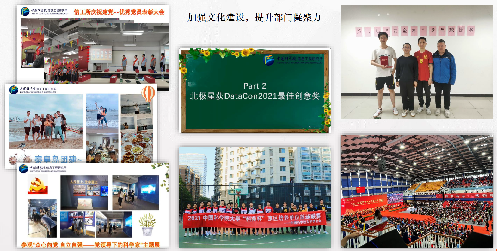

关于北极星

北极星团队隶属于中科院信工所，是一支工程、科研、实战结合紧密的网络安全研究力量。团队主要包括四个研究方向:
1、高级威胁检测发现与溯源，挂靠网络威胁分析研究室（九室），网络攻防研究室（十室）进行招生与培养;
2、人工智能与信息内容安全，挂靠认知安全研究室（六室）进行招生与培养；
3、威胁情报与智能对抗，挂靠网络攻防研究室（十室）。
4、智能系统安全，挂靠网络攻防研究室（十室）进行招生培养。
科研动态
2025.07.07 论文 "Magnifier: Detecting Network Access via Lightweight Traffic-based Fingerprints" 被 IEEE Transactions on Information Forensics & Security (CCF-A 期刊) 录用
2025.07.07 论文 "Unveiling Code Clone Patterns in Open Source VR Software: An Empirical Study" 被 2025 ASE Journal (CCF-B) 录用
2025.07.05 论文 "Knowledge Negative Distillation: Circumventing Overfitting to Unlock More Generalizable Deepfake Detection" 被 The 33rd ACM International Conference on Multimedia (CCF-A会议) 录用
2025.06.09 论文 "Nüwa: Enhancing Network Traffic Analysis with Pre-trained Side-channel Feature Imputation" 被 2025 IEEE Transactions on Networking (TON 2025) (CCF-A) 录用
2025.06.07 论文 "Got My “Invisibility” Patch: Towards Physical Evasion Attacks on Black-Box Face Detection Systems" 被 Transactions on Dependable and Secure Computing (CCF-A) 录用
2025.05.16 论文 "Generate First, Then Sample: Enhancing Fake News Detection with LLM-Augmented Reinforced Sampling" 被 The 63rd Annual Meeting of the Association for Computational Linguistics (CCF-A会议) 录用
2025.04.28 论文 "CTI-Shapley: An ATT&CK-Guided Enhanced Shapley Value Mechanism for Benefit Distribution in Cyber Threat Intelligence Sharing" 被 2025 International Conference On Intelligent Computing (ICIC 2025) (CCF-C) 录用
2025.04.28 论文 "Multimodal Test-Time Adaptation for Fake News Detection" 被 International Conference On Intelligent Computing 2025 (CCF-C 会议) 录用
2025.04.08 论文 "Dual Adaptive Windows toward Concept-Drift in Online Network Intrusion Detection" 被 25th International Conference on Computational Science (IIE-B) 录用
2025.04.01 论文 "R²FND: Reinforced Rationale Learning for Fake News Detection with LLMs" 被 International Joint Conference on Neural Networks 2025 (CCF-C会议) 录用
2025.03.21 论文 "Concept-Centric Learning for Weakly-Supervised Temporal Sentence Grounding" 被 IEEE International Conference on Multimedia and Expo 2025 (CCF-B 会议) 录用
2025.03.19 论文 "威胁情报共享中的利益分配研究综述" 被 信息安全学报 (IIE-B) 录用
2025.03.12 论文 "Unveiling Deepfakes with Latent Diffusion Counterfactual Explanations" 被 ICASSP (CCF-B) 录用
2025.03.01 论文 "MUN: Image Forgery Localization Based on M3 Encoder and UN Decoder" 被 AAAI (CCF-A) 录用
2025.02.26 论文 "A Vulnerability-Driven Gym for Training Autonomous Cyber Agents with Reinforcement Learning" 被 UIC (CCF-C) 录用
2025.02.17 论文 "Mirage: Real-time Network Traffic Evasion with Deep Reinforcement Learning" 被 IEEE Internation Conference on Communications (CCF-C 会议) 录用
2025.01.17 论文 "Modeling Spoof Noise by De-spoofing Diffusion and its Application in Face Anti-spoofing" 被 IJCB (CCF-C) 录用
2025.01.13 论文 "GELog: A GPT-Enhanced Log Representation Method for Anomaly Detection" 被 The 33rd IEEE/ACM International Conference on Program Comprehension (ICPC 2025) (CCF-B) 录用
2025.01.01 论文 "MetaTKG++: Learning evolving factor enhanced meta-knowledge for temporal knowledge graph reasoning" 被 PR (CCF-B) 录用
2024.12.21 论文 "Unveiling Deepfakes with Latent Diffusion Counterfactual Explanations" 被 ICASSP (CCF-B) 录用
2024.12.10 论文 "MUN: Image Forgery Localization Based on M3 Encoder and UN Decoder" 被 AAAI (CCF-A) 录用
2024.11.01 论文 "A LLM-based agent for the automatic generation and generalization of IDS rules" 被 23rd IEEE International Conference on Trust, Security and Privacy in Computing and Communications (CCF-C) 录用
2024.10.30 论文 "Pre-trained Language Models for Alert Aggregation: Limitations and Opportunities" 被 International Conference on Information Security and Cryptology (ICISC 2024) (IIE-C) 录用
2024.09.26 论文 "A Vulnerability-Driven Gym for Training Autonomous Cyber Agents with Reinforcement Learning" 被 UIC (CCF-C) 录用
2024.08.20 论文 "Threat Intelligence Quality Assessment Model Based on ATT&CK Framework for Multiple Application Scenarios" 被 2024 International Conference On Intelligent Computing (ICIC 2024) (CCF-C) 录用
2024.06.17 论文 "Modeling Spoof Noise by De-spoofing Diffusion and its Application in Face Anti-spoofing" 被 IJCB (CCF-C) 录用
2024.05.23 论文 "MetaTKG++: Learning evolving factor enhanced meta-knowledge for temporal knowledge graph reasoning" 被 PR (CCF-B) 录用
2024.05.19 论文 "Semantics Fusion of Hierarchical Transformers for Multimodal Named Entity Recognition" 被 ICIC (CCF-C) 录用
2024.05.16 论文 "Chain-of-History Reasoning for Temporal Knowledge Graph Forecasting" 被 ACL-Findings (CCF-B) 录用
2024.03.13 论文 "GAN Inversion for Image Editing via Unsupervised Domain Adaptation" 被 ICME (CCF-B) 录用
2024.03.13 论文 "Learning Spatiotemporal Inconsistency via Thumbnail Layout for Face Deepfake Detection" 被 IJCV (CCF-A) 录用
2023.10 论文"Spoof-guided Image Decomposition for Face Anti-spoofing."被会议PRCV 2023(CCF-C)录用
2023.8 论文"Towards Open-Set APT Malware Classification under Few-Shot Setting."被会议Globecom 2023(CCF-C)录用
2023.6 论文"Cross-architecture distillation for face recognition."被会议ACM MM 2023(CCF-A)录用
2023.5 论文"TALL: Thumbnail Layout for Deepfake Video Detection."被会议ICCV 2023(CCF-A)录用
2023.5 论文"Modeling Spoof Noise by De-spoofing Diffusion and its Application in Face Anti-spoofing."被会议IJCB 2023(CCF-C)录用
2023.5 论文"AST2Vec: A Robust Neural Code Representation for Malicious PowerShell Detection."被会议SciSec 2023(IIE-C)录用
2023.5 论文"Rumor Detection with Diverse Counterfactual Evidence."被会议KDD 2023(CCF-A)录用
2023.4 论文"Prism: Real-Time Privacy Protection Against Temporal Network Traffic Analyzers."被期刊TIFS(CCF-A)录用
2023.4 论文"Payload Level Graph Attention Network for Web Attack Traffic Detection."被期刊ICCS(IIE-B)录用
2023.2 论文"Masked Relation Learning for DeepFake Detection."被期刊TIFS(CCF-A)录用
2023.2 论文"StochasticFormer: Stochastic Modeling for Weakly Supervised Temporal Action Localization."被期刊TIP(CCF-A)录用
2022.11 论文"Grouped Knowledge Distillation for Deep Face Recognitionn."被会议AAAI 2022(CCF-A)录用
2022.10 论文"A Glimpse of the Whole: Detecting Few-shot Android Malware Encrypted Network Traffic."被会议HPCC 2022 (CCF-C)录用
2022.10 论文"ProGraph: Robust Network Traffic Identification with Graph Propagation."被期刊ToN (CCF-A)录用
2022.10 论文"MetaTKG: Learning Evolutionary Meta-Knowledge for Temporal Knowledge Graph Reasoning."被会议EMNLP 2022 (CCF-B)录用
2022.09 论文"High-Efficient and Few-Shot Adaptive Encrypted Traffic Classification With Deep Tree."被会议MILCOM 2022 (IIE-B)录用
2022.09 论文"Robust Network Traffic Identification with Graph Matching."被期刊Computer Networks (CCF-B)录用
2022.09 论文"OW-TAL: Learning Unknown Human Activities for Open-World Temporal Action Localization."被期刊PR (CCF-B)录用
2022.06 论文"Dynamic Graph Modeling for Weakly-Supervised Temporal Action Localization."被会议ACM MM 2022 (CCF-A)录用
2022.06 论文"Action Shuffling for Weakly Supervised Temporal Localization."被期刊TIP (CCF-A)录用
2022.05 论文"TwinNet: Twin Structured Knowledge Transfer Network for Weakly Supervised Action Localization."被期刊MIR 录用